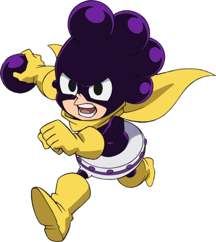

Minoru Mineta
Nome de Herói: Grape Juice
Individualidade: Pop Off – Produz esferas roxas extremamente grudentas no topo de sua cabeça que se regeneram instantaneamente. Elas grudam em qualquer superfície, exceto nele mesmo.
Perfil:
Baixinho e declaradamente pervertido, seu foco principal é se tornar popular com as garotas. Apesar de covarde à primeira vista, consegue criar estratégias geniais quando está encurralado.